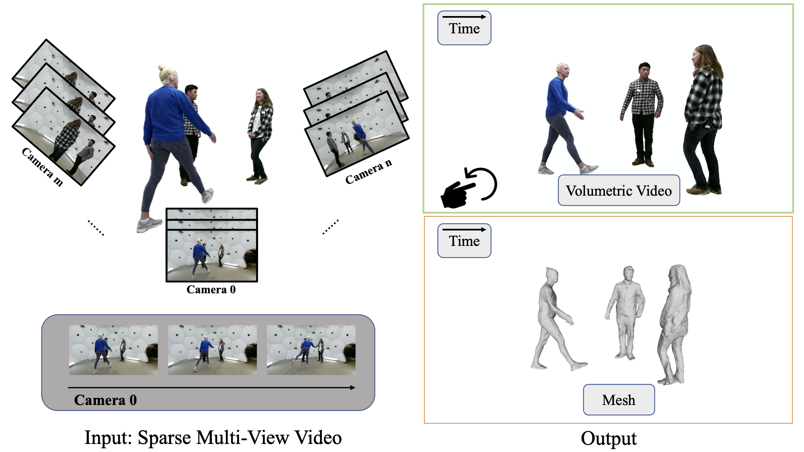
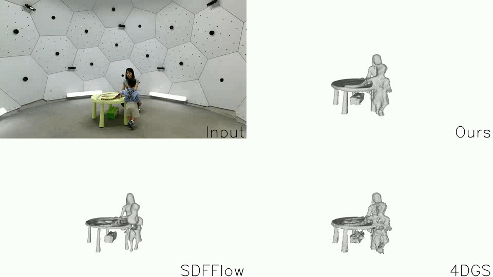
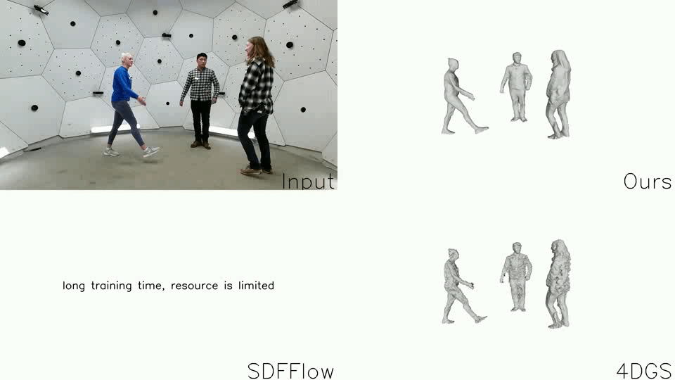
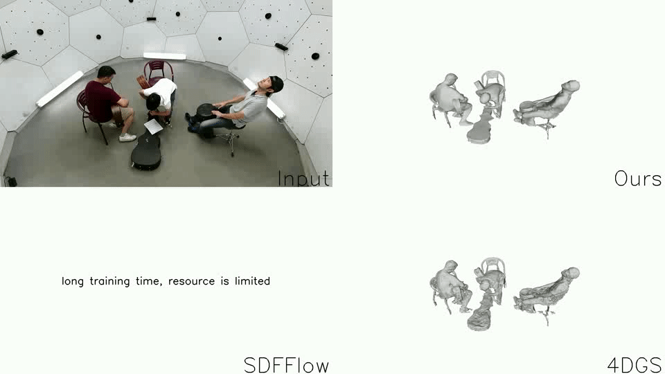
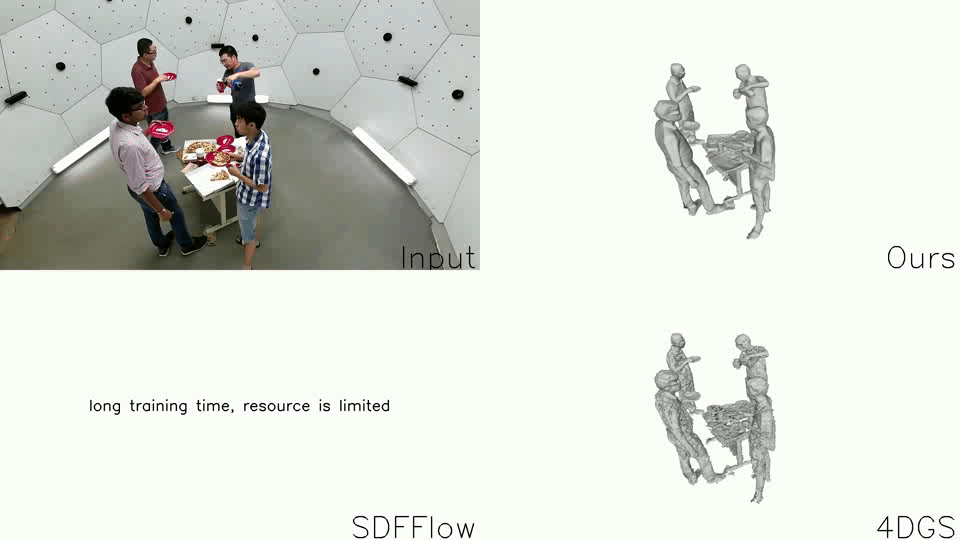

Space-time 2D Gaussian Splatting
for Accurate Surface Reconstruction
under Complex Dynamic Scenes
arXiv
Code

ST-2DGS
: Given sparse view or monocular video input, our method achieves high-quality surface reconstruction and rendering of dynamic scenes.
Demo
Ian3

Hanggling_b2

Band1

Pizza1
